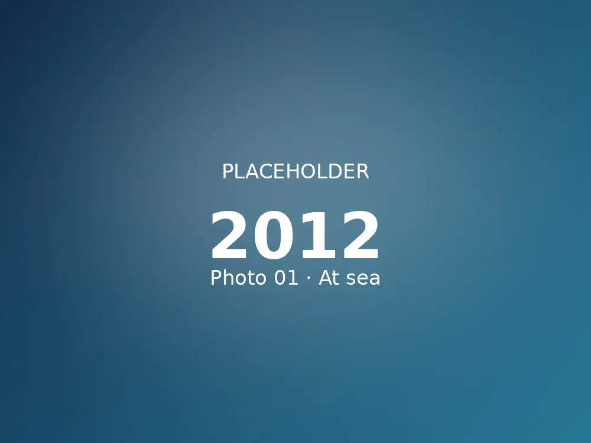
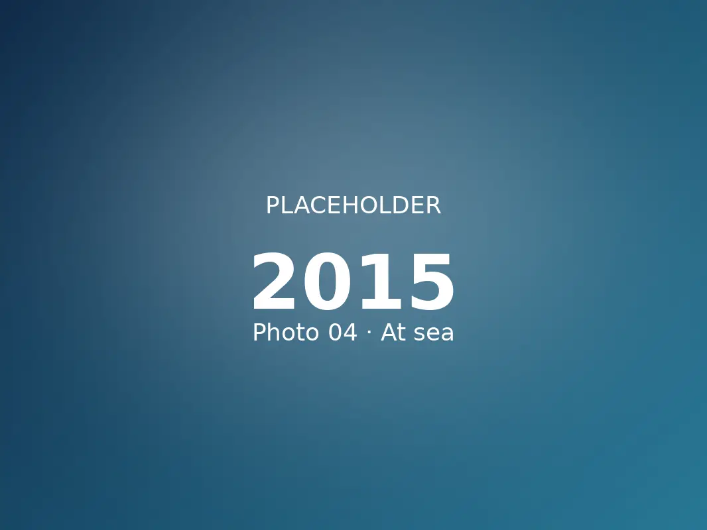
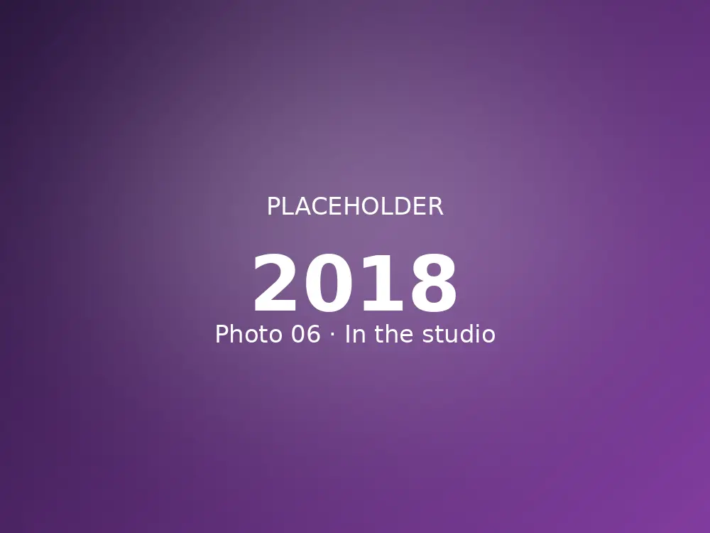
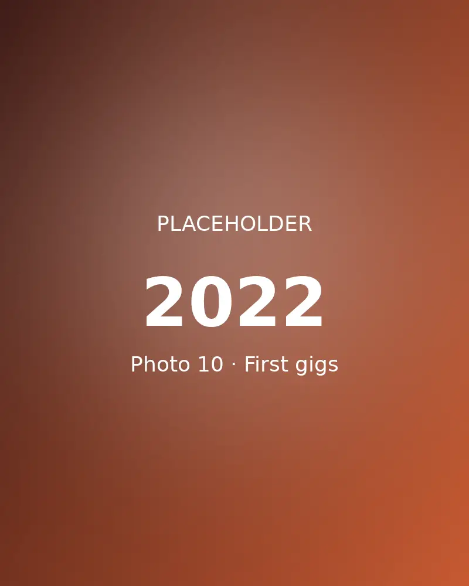
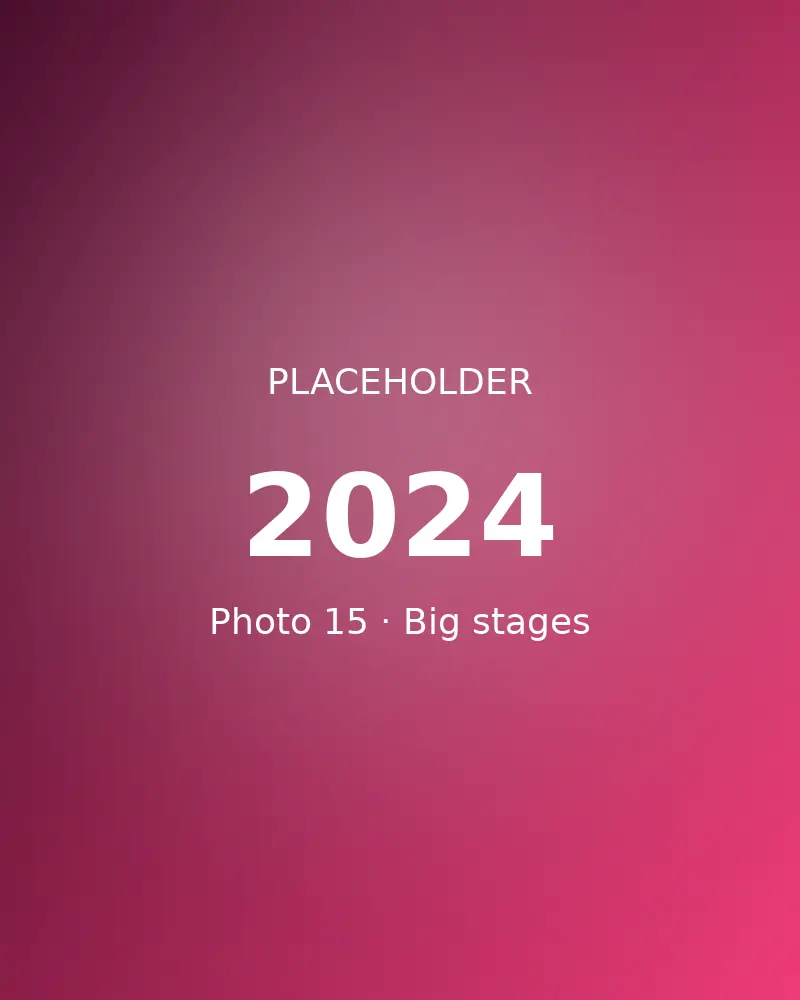
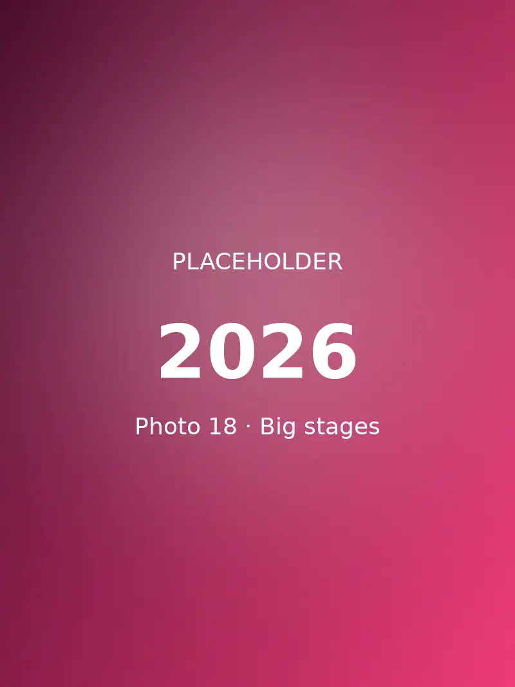

Sound of Drip
Once navigated the oceans. Now I navigate sound, cinema, and artificial intelligence. I make music, direct AI films, engineer multi-agent systems, and create festivals I perform at.
Chapter 01
Music
Classical and Bollywood, rebuilt for the dancefloor. I fuse them with house, tech house, big room and dubstep, and every set is built for one thing: high-dopamine dance energy.
EPK + Tech Rider Kit
Press kit and technical rider, for festivals, venues and bookers.
Chapter 02
AI Portfolio
I direct films, ads and automations with AI, from a superhero trailer to brand spec ads to content pipelines that publish themselves. I'm happiest where story meets systems.
Company OS
Multi Agent RAG System
Yours Stoically
Vikram & Betaal reels on autopilot · n8n automation
Hint Me Up
Puzzle reels on autopilot · n8n automation
WhatsApp agent
Guest enquiries answered on WhatsApp · n8n AI agent
SIP ad
Mutual fund awareness ad · spec work · AI film
Cyclonex
AI movie trailer · writer & director
Chapter 03
Ventures
Some ideas are best revealed at the drop. I'm building something new for creators and musicians. Watch this space.
Chapter 04
Gallery
From ship decks to main stages: the road so far, one frame at a time.

2012 · At sea
2015 · At sea
2018 · In the studio
2022 · First gigs
2024 · Big stages
2026 · Big stages
Make waves
Festivals, brands, automations or a track together: if it should make waves, I'm in.
Say hello